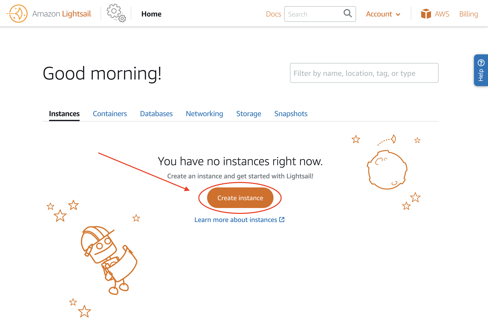

YouTube, Amazon Web Services
Why would you choose PHP for your web development project? Well, first, it's very user-friendly and easy to utilize. If you are a large company with employees, then this method will be best for getting new workers acclimated with the interface. The language of PHP allows programmers to get off to a quick start.
For the sake of this walkthrough, we will look at WordPress. The methodology should be relatively similar for other PHP-based web interfaces, though. Before you can do anything, you need to have a domain. Amazon Lightsail is a great web service that we reccommend for your projects.
Once you have your account set up, create an instance in Lightsail.
Image from Amazon Web Services
From here, it will ask you some basic information about your region and availability zone. Then, select your platform and "WordPress" as the blueprint. It will then prompt a payment request, where you can select whichever plan suits your website needs. Finally, you can now name your instance and create it.
Now, you're going to select the boxy, orange SSH icon. Once the SSH window opens (it should read "Bitnami" at the top) then you can enter the following command into the window to get your password:
cat $HOME/bitnami_application_password
Your password should pop up now. Below is an example of where you could find it. Copy and paste it somewhere in your notes for later.

Image from Amazon Web Services
Here's the part you've been waiting for. To get onto WordPress, paste the following link into your browser:
http:// [IP Address Here] /wp-login.php
Image from WordPress.org
Congratulations! You should be able to access your WordPress website and fully customize your new PHP-based web application. Your website will also allow others to visit it on the World Wide Web.

From Giphy.con